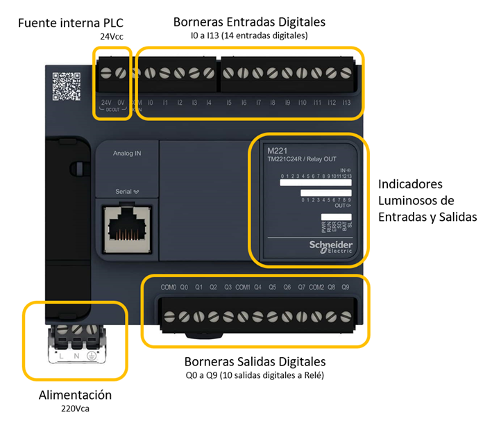
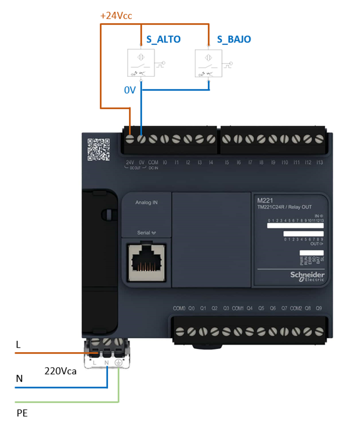
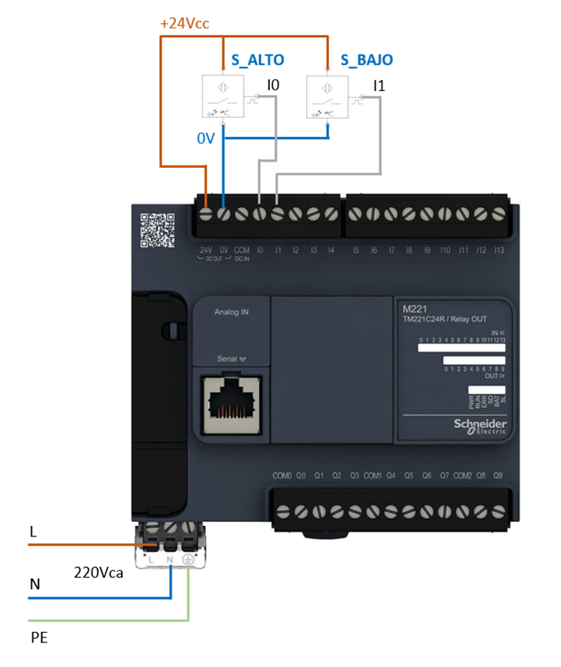
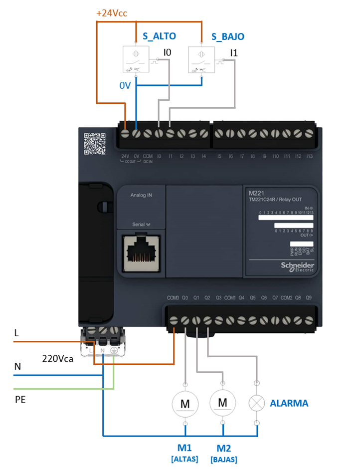
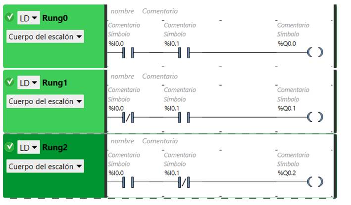

APLICACIÓN INDUSTRIAL: Separación de cajas por altura
Implementación con PLC
Trabajemos nuevamente sobre la aplicación de separación de cajas por altura con la que venimos ejemplificando la aplicación de contenidos al final de cada unidad. Esta vez veremos cómo sería la implementación del proceso utilizando como elemento de control un PLC.
Es importante aclarar que el objetivo de la sección (y de todo el curso) es hacer una introducción y dar nociones básicas de cómo sería esta implementación, tanto a nivel conexionado de los componentes (hardware), como de programación del controlador (software). Quedarán aspectos técnicos a evaluar en cursos específicos de Programación de PLC.
Recordemos la tabla de verdad de la aplicación y su implementación con Lógica Cableada:


Tenemos que implementar esta lógica de funcionamiento con un PLC.
Para el ejemplo trabajemos con un PLC Schneider modelo M221, aunque podría por supuesto ser cualquier otro. El software para realizar la programación de este equipo es el que ya hemos mencionado en secciones anteriores: EcoStruxure Machine Expert - Basic

El equipo de la figura tiene como referencia TM221C24R / Relay OUT.
Es decir, en particular este equipo posee:
- TM221 refiere al modelo M221
- La letra C refiere a un clock (reloj) interno que permite realizar programas que estén vinculados con horas ó calendario (no vamos a utilizar en nuestro ejemplo).
- 24R refiere a 24 bornes de entrada-salida (14 entradas + 10 salidas)
- Y en este caso, las 10 salidas son “salidas a relé”, hablaremos luego de cómo deben conectarse estas salidas.
Diferenciamos las partes del mismo en la siguiente figura:

Observamos que tiene 14 entradas digitales en la parte superior, y 10 salidas digitales a relé en la parte inferior. El PLC tiene leds indicadores que encienden cuando alguna de las entradas se activa (llega señal de 24Vcc a bornera), o bien por programa el PLC activa alguna de las salidas.
En la parte inferior tenemos las borneras de alimentación, este equipo debe alimentarse a 220Vca. Por otro lado, el PLC tiene una fuente interna que entrega 24Vcc con borneras en la parte superior izquierda.
Conexionado del PLC
Comencemos con el conexionado de entradas.
Sólo implementaremos lo que habíamos desarrollado en Lógica Cableada, es decir, tenemos como entradas únicamente a los sensores ópticos que denominamos S_ALTO y S_BAJO (en una aplicación real también tendríamos pulsadores de inicio y parada, pulsadores de emergencia, otros sensores de proceso y seguridad, etc).
Antes que nada, conectamos a 220Vca la alimentación del equipo.
Y luego, utilizamos la fuente interna del PLC para conectar los dos sensores ópticos de tres hilos, recordando que el código de colores corresponde a: BROWN = +24Vcc / BLUE = GND (Ov).
Observamos estas conexiones en la figura.

Las salidas de los sensores ópticos las conectaremos a las entradas del PLC.
Podemos elegir cualquier entrada, tomaremos para el ejemplo que S_ALTO será la primera entrada I0, y S_BAJO la segunda entrada I1.
El conexionado queda entonces:

Terminadas las entradas, veamos el conexionado de las salidas para activar los actuadores del proceso: M1 (cajas altas), M2 (cajas bajas) y ALARMA. Recordemos que estos tres actuadores funcionaban a 220Vca.
Elegimos tres salidas del PLC para asociar con los actuadores, en este caso conectaremos:
M1 – salida Q0
M2 – salida Q1
ALARMA – salida Q2

En el diagrama observamos el conexionado.
En este equipo mencionamos que tenemos “salidas a relé”. Es decir que al activar una salida, el PLC activa un pequeño relé integrado que cierra un contacto. Este contacto es eléctricamente independiente a la bobina, es decir que nos permite, utilizando la tensión necesaria en dicho contacto conectar cargas que funcionen a cualquier voltaje.
En nuestro caso necesitamos 220Vca para los 3 actuadores, por eso realizamos un puente desde la alimentación del PLC al “COM0” en la bornera de salida. De esta manera, al activarse Q0, Q1, Q2 ó Q3, estas salidas entregarán una tensión de 220Vca.
Los siguientes COM1 corresponden a la tensión que entregarán las salidas Q4 a Q7, y COM2 a la tensión que entregarán las últimas salidas Q8 y Q9.
NOTA IMPORTANTE:
Es fundamental tener en cuenta también el consumo de las cargas, y el amperaje máximo que soportan los contactos de las salidas del PLC de acuerdo a especificaciones del fabricante.
En general, un PLC con salida a relé soporta hasta 5A ó 10A como máximo considerando cargas resistivas. Si la carga que vamos a conectar superara esa corriente, debemos evitar su conexión directa a la bornera del PLC.
La solución podría ser conectar a la salida del PLC la bobina de un contactor (de poca corriente de consumo), y utilizar los contactos auxiliares del mismo para alimentar la carga de gran consumo. De esta manera es como se controla, por ejemplo, el arranque de un motor trifásico con las salidas de un PLC.
Programación del PLC
Nos toca ahora realizar la programación del equipo para que se cumpla la lógica de funcionamiento que ya habíamos logrado en lógica con relés. Volvamos a recordar aquel esquema:

Ya hemos realizado el conexionado de los sensores que figuran en el circuito de mando de la izquierda. Recordemos que tenemos asociadas las entradas y salidas de acuerdo a:
|
Entradas digitales |
S_ALTO |
I0 |
%I0.0 |
|---|---|---|---|
|
S_BAJO |
I1 |
%I0.1 |
|
|
Salidas digitales |
M1 |
Q0 |
%Q0.0 |
|
M2 |
Q1 |
%Q0.1 |
|
|
ALARMA |
Q2 |
%Q0.2 |
La última columna corresponde a la denominación o direccionamiento en el PLC, es decir a cómo debemos llamar a las entradas y salidas en el programa en lenguaje ladder que se va a realizar.
El programa debe cumplicar con la sencilla lógica de contactos que se observa en el circuito de potencia con relés, por lo que el circuito en ladder será simplemente:

El programa resulta muy sencillo, pero con este direccionamiento propio del PLC es dificil de seguir y comprender la lógica de funcionamiento. Aún siendo un circuito básico tenemos que estar recordando qué componente se conecta a qué entrada ó a qué salida.
Utilizando las herramientas de notación del software, y lo que se denomina “direccionamiento simbólico” de entradas y salidas, podemos documentar mejor el programa para un mejor entendimiento:

Ahora sí podemos entender mejor la lógica de funcionamiento: cada entrada y salida tiene la descripción ó “símbolo” que venimos utilizando, dimos nombre a cada “Rung” ó línea de programa, y agregamos comentarios para recordar la forma en la que depende cada salida al estado de cada entrada de acuerdo a la tabla de verdad del principio.

Quedan muchos detalles por ver y estudiar, pero podemos decir en este momento, que habiendo analizado una aplicación industrial y logrado encontrar la lógica de funcionamiento necesaria para cada actuador que interviene en el proceso, hemos podido desarrollar dos soluciones, la primera implementando con Lógica Cableada y circuitos con relé, y en este segundo caso que terminados de presentar, desarrollando en Lógica Programa un programa en lenguaje Ladder de un PLC Schneider sobre el que previamente habíamos esquematizado la manera de conectar entradas y salidas digitales.